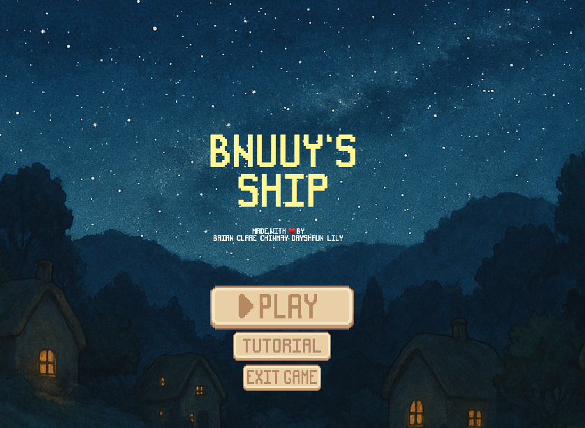

Video Game Programming
A top-down action/strategy game built with a custom C++/OpenGL engine. Captain a modular ship, rescue bunnies, and battle pirate chickens in a handcrafted 2D world.

Bnuuy's Ship (click to enlarge)
Laying the groundwork for a custom 2D engine.
Our team, "Bnuuy Savers", set out to build a top-down action/strategy game completely from scratch in C++ and OpenGL. We conceptualized a flooded world where players captain a modular ship to rescue stranded bunnies from pirate chickens.
Before writing rendering code, we had to agree on a robust architecture. We chose an Entity-Component-System (ECS) using the EnTT library. This allowed us to decouple game object data from logic, making it much easier to scale our systems for rendering, physics, and AI.
Translating ideas into rendering code and core interactions.
The first programmatic milestone focused on getting pixels on the screen and objects moving. I implemented the core scene manager and worked heavily on the sprite rendering system.
Key technical achievements in this phase included:
Adding the "brain" to the game world.
With rendering in place, the game needed conflict. I took on a major role in developing the enemy and companion AI systems.
We implemented A* Pathfinding so enemy "Boat Chickens" could intelligently navigate around complex island geometries to swarm the player ship. For our companion characters, I helped build a Decision Tree AI system. When players rescued a "Helper Bunny", they could place that bunny on a cannon. The decision tree evaluated the nearest enemy threat and automated the aiming and firing logic seamlessly, effectively turning a manual station into an auto-turret.
Additionally, we upgraded our physics engine to handle precise polygon-polygon continuous collision detection, ensuring the ship couldn't clip into the newly complex island shapes.
Expanding mechanics, content, and game feel.
Milestone 3 was all about variety. We transformed the basic gameplay loop into an engaging experience by introducing a wealth of new content. We expanded the ship module system to include Laser Beams, Healing stations, and "Bubble Buffs" that slowed down enemies.
I focused on creating dynamic environmental obstacles, like Tornadoes and Whirlpools, giving the player more threats to manage beyond just angry birds. We also implemented a dynamic Radar System pointing toward stranded bunnies, and a robust Save/Load system utilizing JSON serialization so players could keep their ship configurations across different play sessions.
Finalizing the engine architecture and user experience.
The final push was about ensuring our custom C++ engine ran flawlessly. This meant extensive memory management checks to guarantee zero memory leaks or hoarding during prolonged gameplay. We optimized our render calls using instanced rendering to maintain a rock-solid 60 FPS.
To improve the user experience, I worked on module stationing feedback and cooldown UI indicators. We integrated a visual Particle System for explosions, added an in-game Encyclopedia book to document the complex systems we built, and wrapped everything with a cinematic intro cutscene and original music.